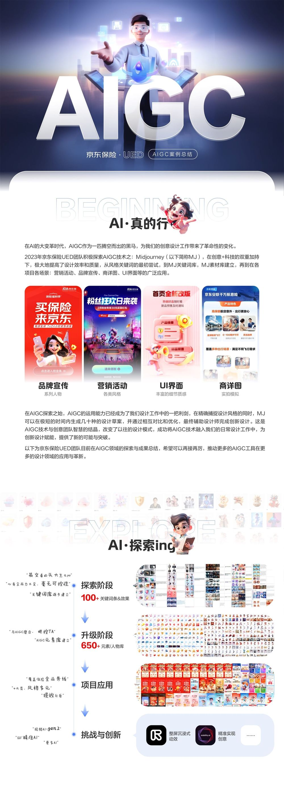
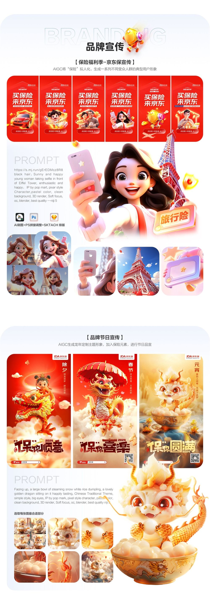
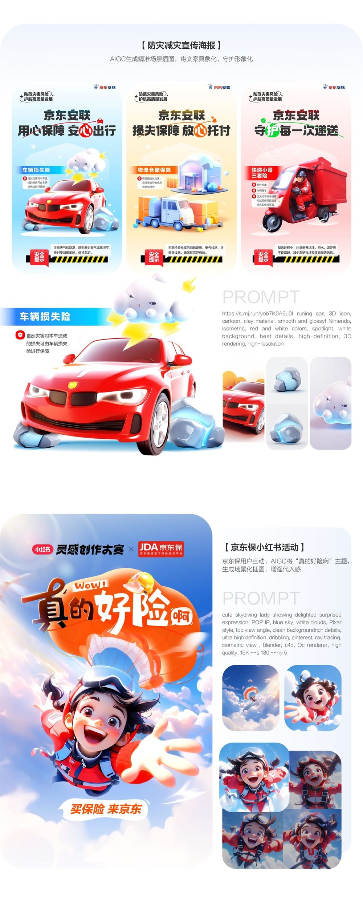
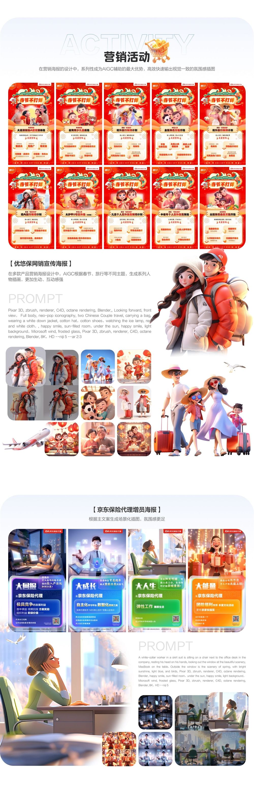
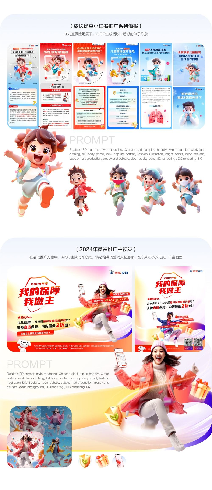
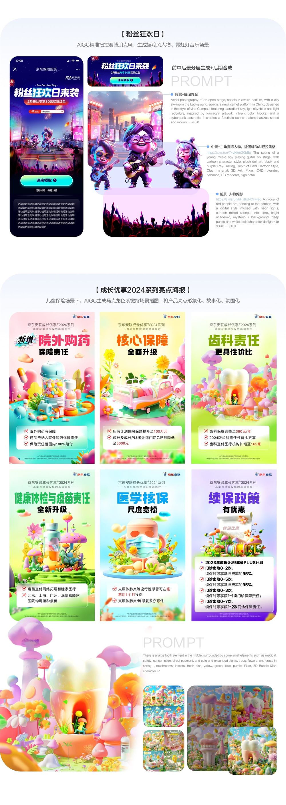
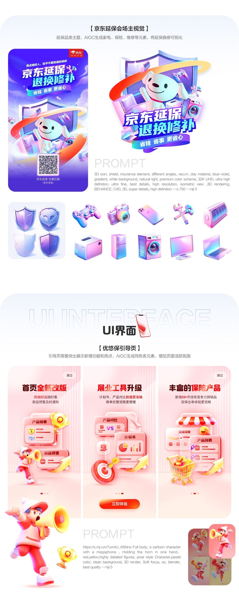
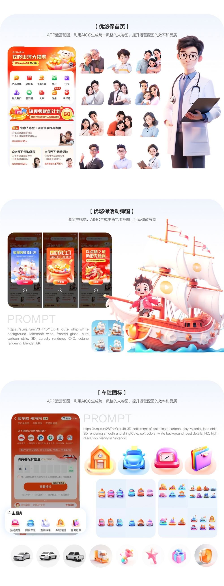
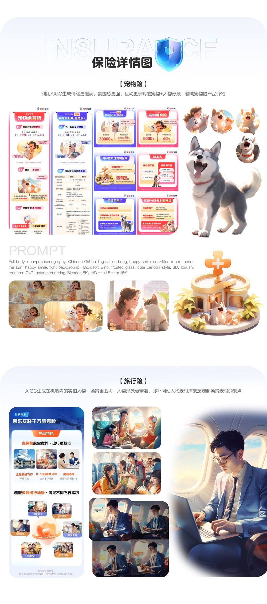
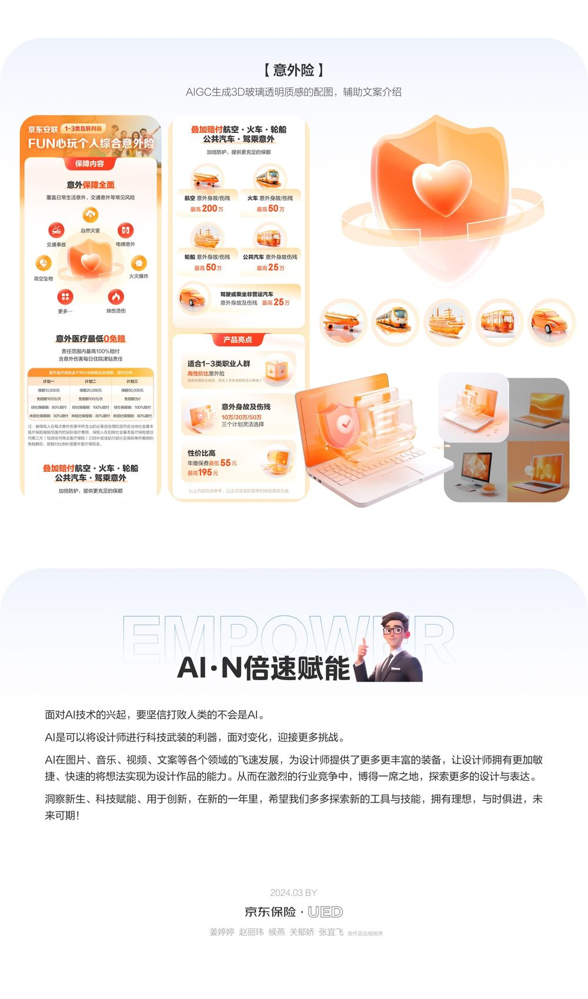

大厂 AIGC 提速案例 · 京东保险 UED 项目设计总结
京东保险 UED 团队用 Midjourney 跑通从风格关键词、关键词库、素材库到营销活动、品牌宣传、商详图与 UI 界面的全链路落地，把 AIGC 变成真正的设计生产力。
本文整理自优设网《大厂 AIGC 提速案例！京东保险 UED 项目设计总结》，版权归原作者所有。以下按原文顺序转录项目成果长图与配图说明。
00 / 写在前面
在 AI 的大变革时代，AIGC 作为一匹腾空而出的黑马，为我们的创意设计工作带来了革命性的变化。2023 年京东保险 UED 团队积极探索 AIGC 技术之 Midjourney（以下简称 MJ），在创意 + 科技的双重加持下，极大地提高了设计效率和质量 —— 从风格关键词的最初尝试，到 MJ 关键词库、MJ 素材库建立，再到在各项目各场景：营销活动、品牌宣传、商详图、UI 界面等的广泛应用。
以下为京东保险 UED 团队目前在 AIGC 领域的探索与成果总结，希望可以再接再厉，推动更多的 AIGC 工具在更多的设计领域的应用与革新。

01 / 保险详情页 · 宠物险
利用 AIGC 生成情绪更饱满、氛围感更强、互动更亲和的宠物 + 人物形象，辅助宠物险产品介绍。

02 / APP 运营页 · 悠悠保首页
APP 运营配图，利用 AIGC 生成统一风格的人物图，提升运营配图的效率和品质。

03 / 品牌宣传 · 京东保
保险福利季 —— 京东保宣传：AIGC 将「保险」拟人化，生成一系列不同受众人群的典型用户形象。

04 / 防灾减灾宣传海报
AIGC 生成精准场景插图，将文案具象化，守护形象化。

05 / 小红书推广系列海报
成长优享小红书推广系列海报：在儿童保险场景下，AIGC 生成活泼、动感的孩子形象。

06 / 粉丝狂欢日
AIGC 精准把控赛博朋克风，生成摇滚风人物、霓虹灯音乐场景；前中后景分层生成 + 后期合成。

07 / 营销活动 · 春节不打烊
在营销海报的设计中，系列性成为 AIGC 辅助的最大优势，高效快速输出视觉一致的氛围感插图。

08 / 京东延保会场主视觉
延保品类主题，AIGC 生成家电、保险、维修等元素，将延保换修可视化。

09 / 意外险与结语
AIGC 生成 3D 玻璃半透明质感的配图，辅助文案介绍；从风格关键词到关键词库、素材库的沉淀，MJ 已深度嵌入京东保险 UED 的日常设计流程。

AI 在图片、音乐、视频、文案等各个领域的快速发展，为设计师提供了更多更丰富的装备，让设计师拥有更加敏捷、快速地将想法实现为设计作品的能力。在激烈的行业竞争中，博得一席之地，探索更多的设计与表达。洞悉新生、科技赋能、用于创新 —— 在新的一年里，希望我们多探索新的工具与技能，拥有理想，与时俱进，未来可期！